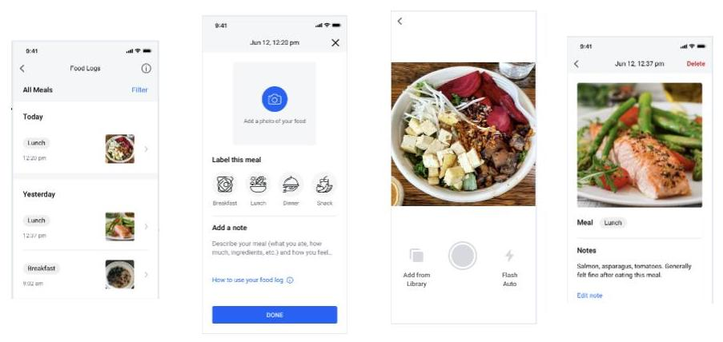
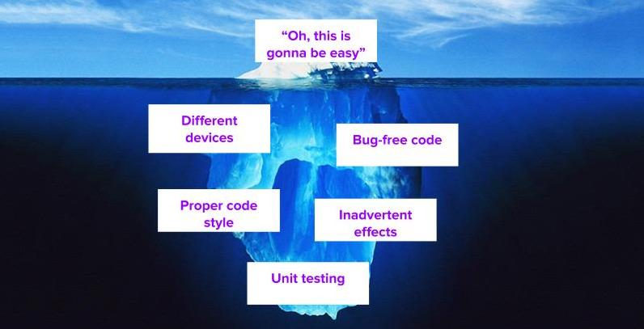

Livongo Health
Software Engineering Intern; Summer 2020
 Food logging project goodness:
Users can take an image/select an image from their gallery, label their meal, add a short note describing what they ate/ anything else, and view all their past food logs in a singular location.
Users can take an image/select an image from their gallery, label their meal, add a short note describing what they ate/ anything else, and view all their past food logs in a singular location.
 My self-coined "iceberg model"